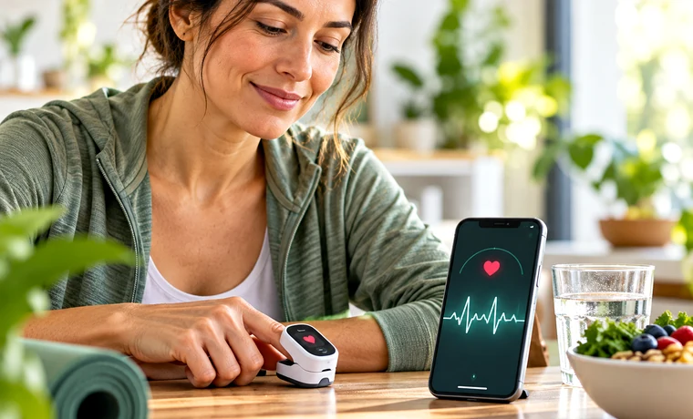
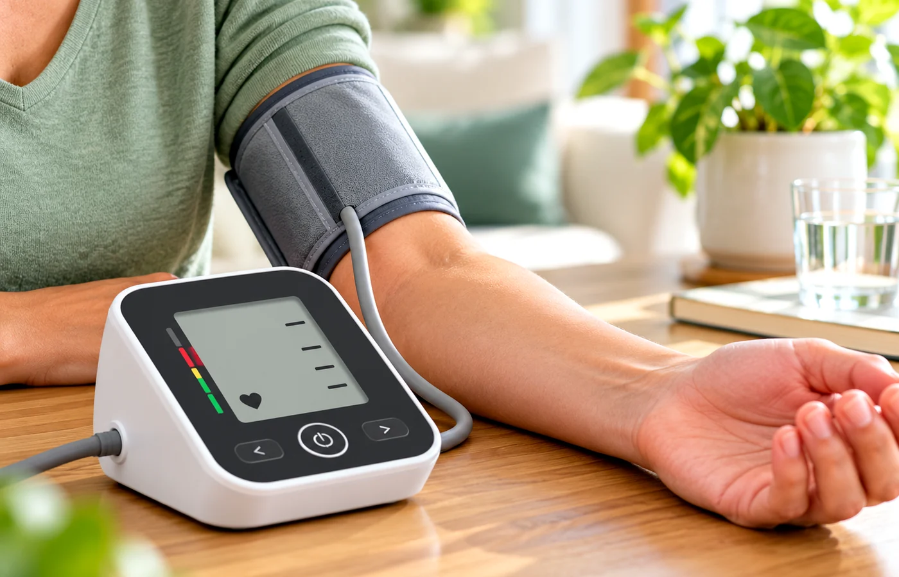
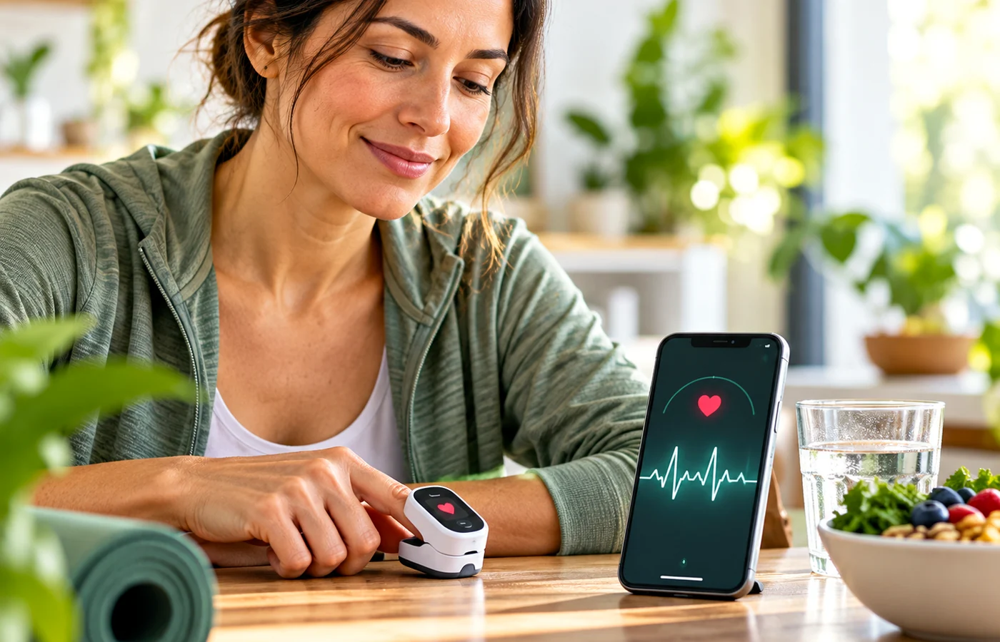

Feel better through simple everyday habits.
Clear, practical wellness guidance for real life — helpful articles, free daily-use tools and premium resources for healthier routines.
Find what matters to you
 Bones, Joints & Movement19 readsBrain & Mind18 readsImmunity & Lungs17 reads
Bones, Joints & Movement19 readsBrain & Mind18 readsImmunity & Lungs17 reads
Heart & Circulation9 readsGut & Digestion11 readsSleep & Recovery7 readsKidney, Urinary & Hydration10 reads Eyes, Ears & Oral Care10 readsSkin, Hair & Beauty14 readsMetabolic Health4 reads
Eyes, Ears & Oral Care10 readsSkin, Hair & Beauty14 readsMetabolic Health4 readsFresh guides people are looking for
Original Daily Vitality explainers built around high-interest wellness questions.

Vitamin D vs. Vitamin D3: What’s the Difference?
A clear guide to vitamin D2 and D3, food sources, blood testing, supplement basics, and why more is not always better.
→Zinc: What It Does, Food Sources, and Supplement Cautions
Learn what zinc does, where to get it from food, common supplement mistakes, and why high doses can create new problems.
→
Biotin for Hair, Skin, and Nails: What the Evidence Actually Says
Biotin is popular in beauty supplements, but deficiency is uncommon and evidence for routine high-dose hair, skin, or nail use is limited.
→Intrusive Thoughts: What They Are and When to Get Help
A calm, practical explanation of intrusive thoughts, why having a thought is not the same as wanting it, and when recurring thoughts may need professional support.
→
Hair Loss: Common Causes, Shedding vs. Thinning, and When to See a Dermatologist
Hair loss has many causes. Learn the difference between shedding and progressive thinning, common triggers, and when a dermatologist can help.
→Latest Articles
Practical, easy-to-follow wellness guides.
Vitamin C for Skin and Health: Food, Supplements, and Serum Basics
A practical guide to vitamin C from food, supplements, and topical skin care — including what each form can and cannot do.
→How Many Steps a Day Do You Really Need?
A practical guide to step counts, walking intensity, and why moving more consistently matters more than chasing one magic number.
→Caffeine and Sleep: How Late Is Too Late?
How caffeine can linger for hours, why sensitivity varies, and how to build a cutoff time that protects sleep without making life rigid.
→
Electrolytes: When Plain Water Is Enough
When water is usually enough, when sweat and illness change the picture, and why more electrolytes are not automatically better.
→Magnesium Glycinate vs. Citrate vs. Oxide
A simple comparison of common magnesium supplement forms, what labels mean, and the practical cautions worth knowing.
→Omega-3s: Food vs. Supplements
A practical look at omega-3 food sources, fish-oil supplements, and why the best choice depends on diet, goals, and medical context.
→Walking After Meals: What It May Do for Blood Sugar
Why a short walk after eating can be a useful routine, how to start gently, and why it does not replace diabetes care.
→
Vitamin B12: Food Sources & Deficiency Basics
What B12 does, where it comes from and when testing may help.
→When to Take Vitamins & Supplements
Timing, meals, interactions and simple reminder routines.
→
Quick Online Mind Tests: What They Can — and Can’t — Tell You
What short brain scores mean and what they do not.
→Free Wellness Tools
All Daily Vitality tools in one moving library.


More useful reads

Colds vs. Flu: What’s the Actual Difference
Colds vs. Flu: What’s the Actual Difference — a plain-language guide to the basics, common myths, everyday habits that may help, and when to talk to a doctor.
→Cold Plunges and Ice Baths: What the Science Actually Says
Cold Plunges and Ice Baths: What the Science Actually Says — a plain-language guide to the basics, common myths, everyday habits that may help, and when…
→
Creatine: Not Just for Athletes Anymore
Creatine: Not Just for Athletes Anymore — a plain-language guide to the basics, common myths, everyday habits that may help, and when to talk to a doctor.
→Cyclosporiasis Outbreak Guide
Cyclosporiasis Outbreak Guide — a plain-language guide to the basics, common myths, everyday habits that may help, and when to talk to a doctor.
→Why Dehydration Affects You More Than You Realize
Why Dehydration Affects You More Than You Realize — a plain-language guide to the basics, common myths, everyday habits that may help, and when to talk to…
→Digital Eye Strain: Why Screens Exhaust Your Eyes
Digital Eye Strain: Why Screens Exhaust Your Eyes — a plain-language guide to the basics, common myths, everyday habits that may help, and when to talk to…
→Ear Health Hearing
Ear Health Hearing — a plain-language guide to the basics, common myths, everyday habits that may help, and when to talk to a doctor.
→Ear Hearing Warning Signs
Ear Hearing Warning Signs — clear, practical wellness guidance with everyday tips, related tools and reads from Daily Vitality.
→Simple Habits to Protect Your Eyesight
Simple Habits to Protect Your Eyesight — a plain-language guide to the basics, common myths, everyday habits that may help, and when to talk to a doctor.
→Eye Warning Signs
Eye Warning Signs — clear, practical wellness guidance with everyday tips, related tools and reads from Daily Vitality.
→Guides, eBooks & Products